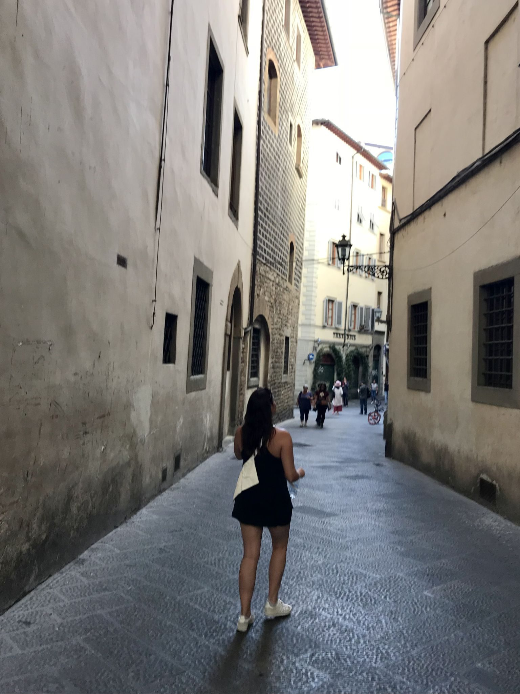

Collections
Every photograph in the archive, gathered by place.

About
Ulana Rey photographs the places she travels — the coastlines, mountain towns, island shores, and old-city streets collected here. She is based in San Francisco, where the fog and the Pacific light set a high bar for everywhere else.
When the camera is down, she is a hiker, runner, reader, and yoga practitioner with a soft spot for spontaneous trips. Professionally, she is a biotech consultant and healthcare executive: Ulana Rey, PharmD (Doctor of Pharmacy, UCSF/Stanford), Founder & CEO of MindLumina, driven by AI and innovation.
Elsewhere: Flickr · Pinterest · X · mindlumina.com